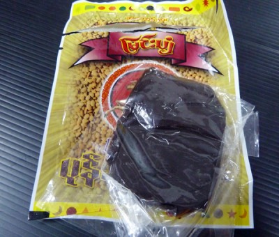

Pork Curry with Pone-Yay-Gyi
Ingredients
- pork belly – 400 grams
- 2 large onion, chopped
- 2 cloves garlic, chopped
- 1/2 ts ginger, chopped
- 2 chillies, halved
- 2 tbs dark soy sauce
- 1 ts of salt
- 1/2 ts of chicken powder
- 1/2 tbs of sugar
- 2 saw herb leaves, sliced
- 1 package of Pone-Yay-Gyi paste

Instructions
- In a large bowl, add pork belly, salt, chicken powder, dark soy sauce and sugar, and mix well.
- It is best to let it marinate in the fridge for at least 2 hours.
- Add 4 cups of water and marinated pork to the pot, lid cover and boil it.
- Add more water until pork is cooked.
- Cut cooked pork belly into 1 cm pieces.
- Heat 2 tablespoons of oil in a large wok. Fry onion, garlic, ginger and chillies until fragrant.

- Add pork belly, Pone-Yay-Gyi paste and 1/2 cup of water, and stir well.
- Add 1/2 ts of salt and 1/2 ts of chicken powder.
- Finally add saw herb leaves. Serves hot with rice.